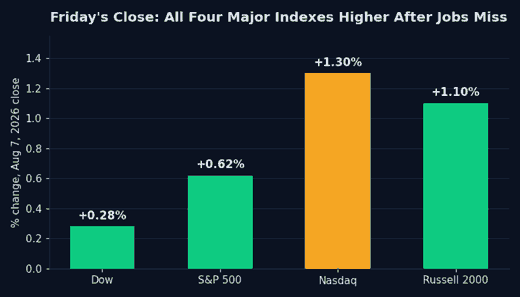

S&P 500 Closes at Record 7,757.64 as Jobs Miss Fuels Fed Rate-Cut Bets

The S&P 500 closed at a record 7,757.64 on Friday, up 0.62%, while the Nasdaq Composite rose 1.30% to 26,690.62 and the Dow Jones Industrial Average added 0.28% to 54,036.93, according to Yahoo Finance. The Russell 2000 gained 1.10% and the VIX eased to 14.90. For the week, the Nasdaq finished up 4.86%, the S&P 500 up 3.37%, and the Dow up 2.10%, per TheStreet.
The catalyst was the July jobs report. The Bureau of Labor Statistics said the economy lost 23,000 jobs last month against a Dow Jones consensus for a gain of 83,000, while the unemployment rate held at 4.1%, below the 4.2% economists expected, as the labor force participation rate fell to 61.4%, its lowest level in more than five years. Chris Zaccarelli, chief investment officer at Northlight Asset Management, told TheStreet the report was "a game changer" because it shifted the market's focus from inflation risk to labor market risk. "Before today, many were expecting that the Fed had no choice but to raise rates in order to fight stubbornly high inflation, because the job market was so strong, but this report shows that isn't the case," he said.
That shift mattered because, going into Friday, the options market was not pricing a routine session as a hedge against a hike. Per Saxo Bank's options desk, press reporting had suggested Fed Chair Kevin Warsh was leaning toward raising rates at the September meeting, and at-the-money options pricing on Thursday implied Friday's jobs report would move the S&P 500 only about 13 index points beyond an ordinary session, treating the release as close to routine. The size of Friday's move suggests that pricing underestimated the report's importance. The next tests are the Consumer Price Index on August 12 and the Producer Price Index on August 13.

Underneath the index-level record, single stocks moved on their own news. Airbnb gained roughly 16% on strong second-quarter results and Microchip Technology jumped 11.7% on first-quarter earnings, while SpaceX rose 11% after Argus upgraded the stock to Buy with a $160 price target. On the other side, the Trade Desk tumbled more than 18% on a disappointing quarter, and Western Digital fell 5.4% on soft guidance, dragging peer Seagate Technology down 8%. In semiconductors, SK Hynix said its board approved roughly $38.3 billion in memory chip investment through 2031, a reminder that AI-driven capital spending is still accelerating even as individual earnings reactions stayed volatile, per TheStreet and Reuters.
The record close resets the technical picture for the major averages, but it does not resolve the underlying rate question. Whether the Fed holds, cuts, or still moves in September, the setup that produced this week's rally has not gone away with it. Swing traders should expect the same stock-specific volatility that split Airbnb from the Trade Desk this week to continue into next Wednesday's CPI release.